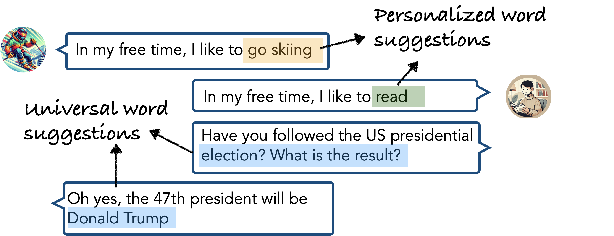
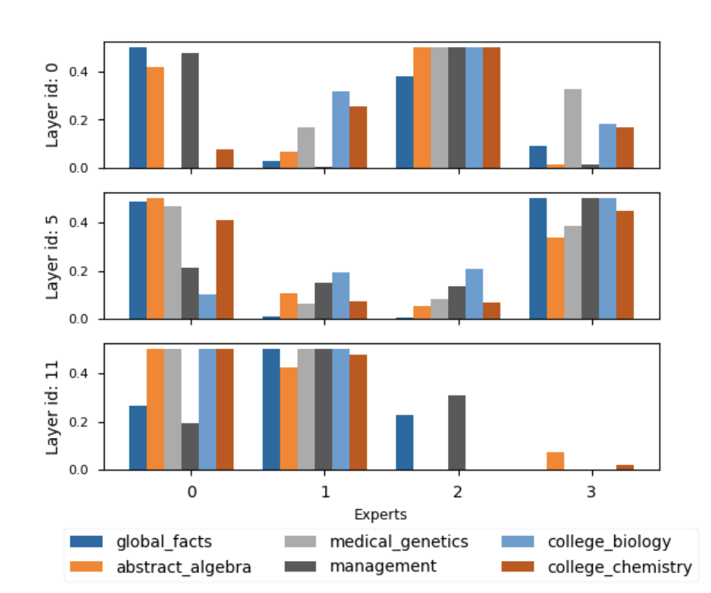
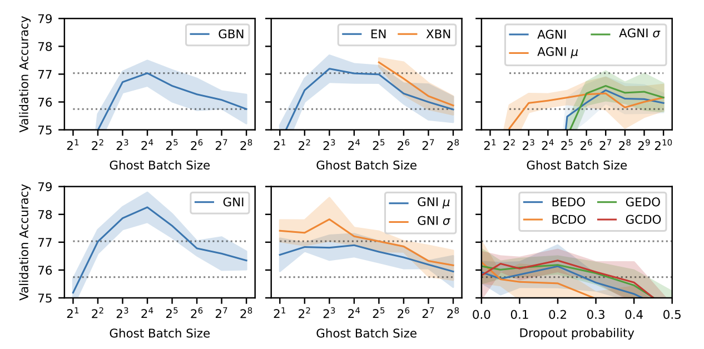
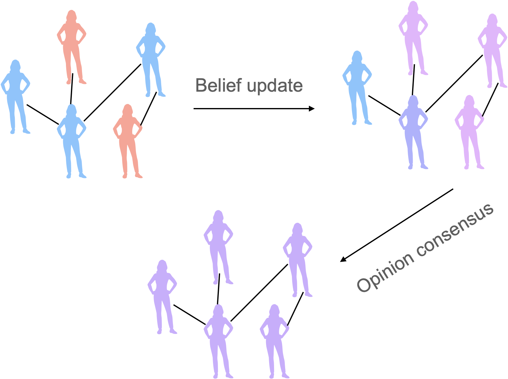

|
Dongyang Fan I'm a PhD student at Machine Learning and Optimization Lab at EPFL, supervised by Prof. Martin Jaggi. My research interests are:
|
{kind=link}
Research
|
|

|
On-Device Collaborative Language Modeling via a Mixture of Generalists and Specialists
Dongyang Fan*, Bettina Messmer*, Martin Jaggi arXiv, 2024 codes / arXiv We propose a novel collaborative language modeling framework that leverages the modularity of MoE. Our framework can efficiently tackle data and resource heterogeneity across devices. |
|

|
Towards an empirical understanding of MoE design choices
Dongyang Fan*, Bettina Messmer*, Martin Jaggi ICLR ME-FoMo Workshop, 2024 arXiv We ablate the design choices of Mixture-of-Experts models, including the different expert specialization from sequence- and token-level routing, and the impact of the number of actiavted and total experts. |

|
Personalized Collaborative Fine-Tuning for On-Device Large Language Models
Nicolas Wagner, Dongyang Fan, Martin Jaggi COLM, 2024 codes / arXiv We introduce three distinct trust-weighted gradient aggregation schemes for collaborative on-device personalized language modeling. |
|

|
Ghost Noise for Regularizing Deep Neural Networks
Atli Kosson, Dongyang Fan, Martin Jaggi AAAI, 2024 arXiv We propose a novel regularizer, ghost noise, that can be used to improve the generalization of DNNs and can be applied to noise-free layer-normalized networks. |
|

|
Collaborative Learning via Prediction Consensus
Dongyang Fan, Celestine Mendler-Dünner, Martin Jaggi Neurips, 2023 codes / arXiv / poster We propose a novel co-distillation method, where models learn from each other by reaching a consensus on the predictions. |
|
Source codes of the website are from here. |